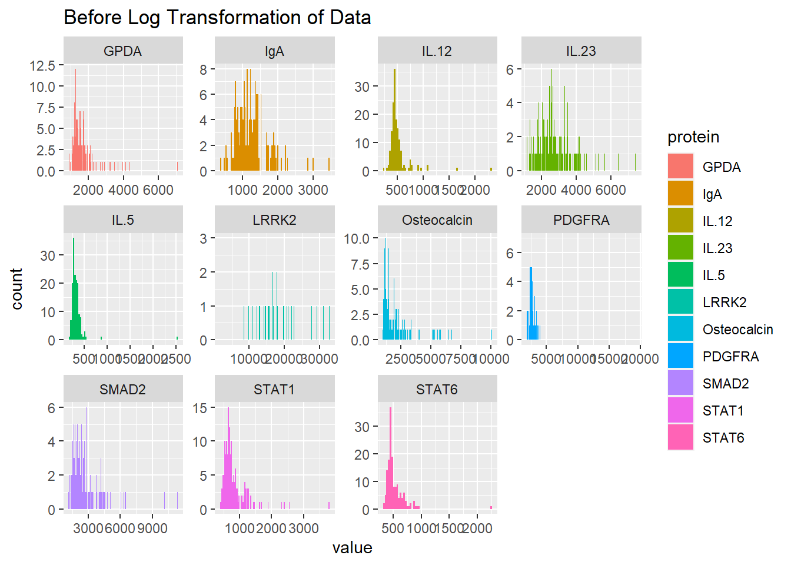

Biomarkers of ASD
Abstract
This project revolves around a dataset which seeks to find a statistical association between levels of proteins in plasma/serum and diagnosed Autism Spectrum Disorder (ASD). A brief description of the sample states that 76 boys with ASD, and 78 typically developing boys were the sample for the dataset. Preprocessing of the raw data file is critical to making a statistical analysis; a log transformation is needed on the raw data file as almost all of the protein levels show a skewed, and high density distribution. Exploratory analysis of outlying values is described after the preprocessing. The methodology used in the predictive portion of the research paper that this project is based off of was used with altered parameters (top 20 proteins instead of top 10). We seek to find a comparable protein panel that achieves the same and/or improved classification accuracy.
Dataset
Background: levels of proteins in plasma/serum are altered in autism spectrum disorder (ASD)
Data comes from Hewitson et al. (2021). Blood biomarker discovery for autism spectrum disorder: A proteomic analysis. PLoS One. 2021 Feb 24
Has serum samples from 76 boys with ASD and 78 typically developing (TD) boys, 18 months-8 years of age
A total of 1,125 proteins were analyzed from each sample (1,317 measured, 192 unknown onesfailed quality control)
The published analysis excluded 192 unidentified variables that we will include in our analysis
Outliers were handled by clipping any z-transformed values less than -3 and greater than 3 to -3 and 3, respectively.
Includes simplifications: repeated RF (Random Forest) fitting, forward selection in the logistic regression model, and repeated estimation of AUROC (Area Under the Receiver Operating Characteristics) for the final classifier(s) were excluded.
Our goal: explore sensitivity of results to certain design choices methodology
SAMPLE CHARACTERISTICS: see slide 6 of first lecture
Summary of published analysis
Summarize the methodology of the paper in 1-3 paragraphs. You need not explain the methods in depth as we did in class; just indicate what methods were used and how they were combined. If possible, include a diagram that depicts the methodological design. (Quarto has support for GraphViz and Mermaid flowcharts.) Provide key results: the proteins selected for the classifier and the estimated accuracy.
The paper by Hewitson et al. discussed identifying biological markers for Autism spectrum disorder (ASD) risk through proteins. They combined three algorithms and utilized machine learning to ultimately form a panel of proteins that may be useful as a blood biological marker to predict ASD risk in boys. They trained random forest models 1,000 times using normalized data. Each protein’s importance value, which was represented using mean decrease in Gini Index, was averaged over the 1,000 random forest simulations and the 10 proteins with the highest averaged importance values were selected. They used t-tests to examine the significant differences between means of the two groups, ASD and TD, and selected the 10 proteins with the highest significant t-test values. They also calculated each protein’s correlation with ADOS total scores to measure ASD severity, and selected the 10 proteins with the highest absolute value of correlation coefficients.
They then found 5 ‘core’ proteins- mitogen-activated protein kinase 14 (MAPK14), immunoglobulin D (IgD), dermatopontin (DERM), ephrin type-B receptor 2 (EPHB2), and soluble urokinase-type plasminogen activator receptor (suPAR)- that were commonly selected across the three methods (random forest, t-test, and correlation approach). They then trained a logistic regression predictive model with these core proteins while adding the leftover 13 proteins one by one, and calculated the area under the curve (AUC) for a test dataset. This helped them identify 4 additional proteins, receptor tyrosine kinase-like orphan receptor 1 [ROR1], platelet receptor Gl24 [GI24], eukaryotic translation initiation factor 4H [elF-4H], and arylsulfatase B [ARSB], that increased the AUC, resulting in a final panel of 9 proteins.
They also evaluated the impacts of ethnicity, seasonal allergies, age, and psychiatric medications as potential confounding factors using t-tests or Spearman’s rank correlation, and found that ethnicity and seasonal allergies had no effect, and that age and use of psychiatric medication had insignificantly small effects.
Findings
Impact of preprocessing and outliers
The first task required us to use the raw data to examine the distribution of the protein amounts. We did this in order to find out why the data was log transformed in the final version of the data set, before they began to use the data set for modeling and predictive purposes.
The first step we took during this task was to grab a sample of proteins from the data set. In the interest of randomness and simplicity, we pulled columns 15:25 from the raw data set, giving us a sample of 11 unknown proteins. Secondly, we pivoted the data long, in order to simplify our next task in ggplot.
biomarkerRaw <- read_csv('../data/biomarker-raw.csv', show_col_types = FALSE)
# Data manipulation
colnames(biomarkerRaw) <- biomarkerRaw[1,]
biomarkerRaw <- biomarkerRaw[-1,]
biomarkerRaw <- lapply(biomarkerRaw, as.numeric)
biomarkerRaw <- as.data.frame(biomarkerRaw)
# Arbitrary Sample of 10 Proteins
biomarkerRaw <- biomarkerRaw %>% select(15:25)
# Pivot Long for ease of use in GGPlot
biomarkerRaw <- biomarkerRaw %>%
pivot_longer(everything(), names_to = "protein", values_to = "value") %>%
arrange(protein)Lastly, we created histograms of the random sample of 11 proteins (reminder that these results are from the raw data before any log transformations).
# Assessing the distribution
biomarkerRaw %>%
ggplot(aes(x=value, fill = protein)) +
geom_histogram(binwidth = 30) +
facet_wrap(~ protein, scales = "free") +
labs(title = "Before Log Transformation of Data")
After examining the histograms of the raw data, it is clear to see why the team decided to log transform the protein levels before beginning statistical analysis. The purpose of log transforming data is to make highly skewed data less skewed, which can be valuable for a many different purposes including predictive modeling. In addition to being highly skewed, most of the proteins have a high density in a small area, which a log transformation will also help with.
(INSERT TASK TWO DOCUMENTATION HERE)
Methodlogical variations
In the third task we conducted the same experiment from the paper but this time we partitioned the data into a testing and training data set in order to conduct accuracy metrics with our models and testing set. Instead of only selecting the top ten proteins from each model and the common proteins among them, in this analysis we selected the top twenty proteins from the random forest model, the t-test, and the correlation with ADOS model. From there we used a fuzzy intersection, where we examined the elements that are common in at least n of the sets. Therefore in this experiment we can look at the proteins that were selected in two of the models. In this case we used the random forest model and the t-test model to examine which ten proteins were common among them. After using each model on our data we found that the “Top 10” common proteins were IgD, Cadherin-5, RELT, DERM, LT-4, Troponin I, skeletal,fast twitch, MAPK2, MATN2, IGFBP-1,M2-PK. These are identified as the “Core Proteins” that were common to both of the methods.
Improved classifier
Task 4